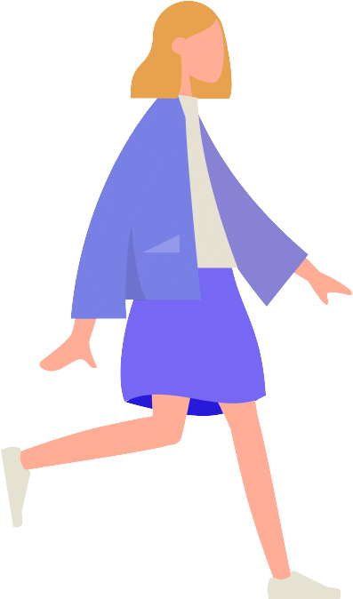

Hello!
I'm Hallie.
I'm Hallie.

Hey! 👋 Thanks for stopping by! I'm currently a freshman at USC going into the Computer Science and Business Administration program. When not in class, you can find me copy editing ✏️ in the Daily Trojan newsroom, playing field hockey 🏑 on the Village Turf, or hanging out on the quad with friends ☀️. I also love baking sweet treats 🍰, watching cheesy movies 🎥, and coding 💻. I built this site from head to body (haha), so feel free to explore and learn some more!
From jugglers to basketball players, I love covering stories and editing articles. I've been involved with journalism since I joined my first publication in my sophomore year of highschool, and I continue to be involved by editing for the Daily Trojan here at USC. I can't wait to see what stories come next!
In March of 2022, I had the opportunity to take part in a design-a-thon for CHLA. We tackled food insecurity in the LA area, addressing the gap between identifying families in need and connecting them with adequate resources. My team's solution, tumme, is a platform designed to enable families to take control of what they eat. Families can input dietary restrictions or cultural preferences into the system and receive info on the availability of their preferred foods nearby. Our product simultaneously helps food banks reduce food waste, as we would be taking inventory.
After taking two architecture courses at USC, I've discovered my love for analyzing buildings. The closer we examine these structures, the more we discover about the thought processes behind them. I previously thought that what made a building great in my eyes was a perfectly symmetrical façade and ordered layout. Studying architecture has given me a new perspective on the buildings around me, enabling me to find beauty and order in even the most peculiar buildings.
In my free time, I'm an avid baker. I love trying out new recipes, though I tend to lean towards cakes and french pastries. One of my favorite family traditions is making pumpkin pies every Thanksgiving. One year, we even grew our own pumpkins all year so that we could use them in the pie! (Honestly, I wouldn't recommend because it doesn't taste much different, but it's fun to try once).
Taking pictures is a great way to document my hobbies, so I've made a habit of snapping pics of things I bake or pretty buildings I see. The picture above is from the Vizcaya Museum in Miami, FL. Although I'm nowhere near a professional photographer, I find it fun to embrace this interest anyways.

I love growing my coding skills by taking on new projects! The ITP courses at USC have given me an intro to Python, HTML, and CSS, and they have also inspired me to pursue the Computer Science and Business Administration major. I'm excited to see all the projects that I get to work on in the future!
Feel free to reach out if you'd like to chat! You can contact me by email (hfaust@usc.edu) or check out my LinkedIn below.